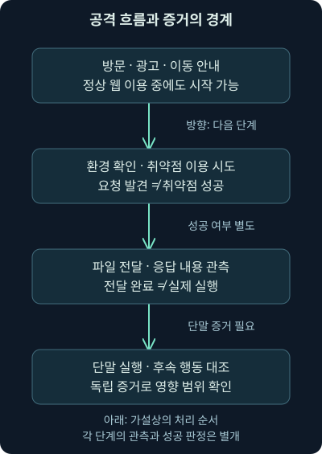
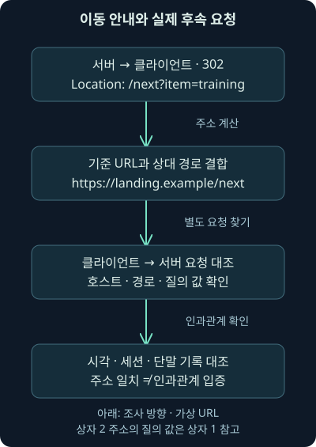
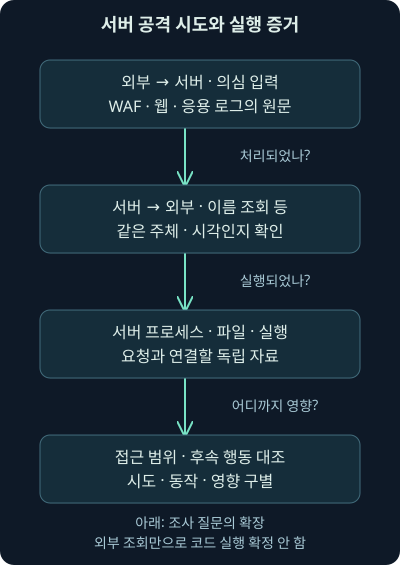

HTTP 공격 흐름: 이동·전달·실행을 나누어 읽기
둘째 날 9강. 리디렉션·익스플로잇·파일 전달·정상 위장 사례를 독립 증거와 실제 침해 성공의 질문으로 연결합니다.
1. 여러 주소를 거쳤는데 어느 단계가 위험했을까요?
직원이 문서 링크를 열었더니 주소가 두 번 바뀌고 파일 하나가 내려왔다고 합시다. 화면에는 별다른 오류가 없었습니다. “리디렉션이 많았으니 감염됐나요?”라는 질문을 받으면, 주소의 개수보다 먼저 각 단계에서 무엇을 관측했는지 나눠야 합니다.
앞선 7강에서는 URL 평판과 헤더의 의미를, 8강에서는 인코딩·파일 복원·반복 통신의 조건을 배웠습니다. 이번 둘째 날 9강은 그 단서들을 공격 흐름의 조사로 연결합니다. 브라우저를 겨냥한 공격, 서버로 들어오는 취약점 악용 시도, 파일 전달을 위한 이동, 정상 자원을 흉내 낸 통신을 서로 다른 질문으로 읽겠습니다.
주소·메시지·기록은 직접 만든 가상 예제입니다. 실제 악성 사이트 방문·익스플로잇 실행·원본 사건 PCAP 분석은 하지 않았습니다. 본 교재로 범위를 확인했고, 별도 워크북의 실행 결과를 재현한 것처럼 설명하지 않습니다. 로컬에서 실제 실행한 작은 메타데이터 계산은 따로 표시합니다.
2. 안내 표지판을 본 것과 목적지에 도착한 것은 다릅니다
건물 입구에서 “접수는 옆 건물로 가세요”라는 안내를 봤다고 해봅시다. 안내를 받은 일, 옆 건물로 이동한 일, 문서를 제출한 일은 각각 다른 사실입니다. 웹에서도 응답의 이동 안내, 다음 요청, 본문 전달, 단말 저장·실행을 구별해야 합니다.
리디렉션은 다른 자원으로 이동하도록 안내하는 동작입니다. HTTP 상태 코드와 Location 헤더를 이용할 수 있고, HTML이나 스크립트가 다음 요청을 만들 수도 있습니다. 페이로드는 공격 맥락에서 전달·실행하려는 코드나 자료를 가리키지만, 네트워크 분야에서는 단순히 헤더 뒤의 운반 자료라는 뜻도 있습니다. 문맥을 함께 읽어야 합니다.
안내판 비유와 다른 점도 있습니다. 브라우저 한 화면에는 광고·프레임·스크립트·여러 탭의 요청이 섞이고, 중간 프록시와 캐시가 응답할 수 있습니다. 시간상 옆에 있는 요청을 전부 하나의 이동 경로로 연결하면 다른 대화를 합칠 수 있습니다.
3. 익스플로잇 키트는 대상 조건에 맞는 공격을 고릅니다
익스플로잇은 취약점을 이용해 의도하지 않은 동작을 일으키는 방법이나 코드를 뜻합니다. 익스플로잇 키트는 방문자의 브라우저·구성 요소 같은 조건을 살펴 공격 코드를 선택하고 자료를 전달하는 여러 기능을 묶은 체계입니다. 하나의 파일 이름이나 특정 포트의 동의어가 아닙니다.
정상 사이트가 변조되거나 광고 경로가 악용되어 방문자가 다른 자원으로 이어질 수 있습니다. 악성 광고, malvertising은 광고 전달 구조를 공격 유입에 이용하는 방식입니다. 사용자가 의심스러운 실행 파일을 직접 선택하지 않은 상황에서도 브라우저 취약점이 공격 표면이 될 수 있습니다.
하지만 방문했다고 반드시 악용이 성공하는 것은 아닙니다. 대상 버전·설정·취약 코드 실행·완화 기능·실제 전달과 실행 조건이 맞아야 합니다. MITRE의 Drive-by Compromise 설명도 정상 탐색 중 악용 경로를 다룹니다. 2026년 11월 6일 확인했으며, 방문 기록을 침해 성공의 자동 증거로 쓰지 않습니다. 드라이브바이 공격의 개념
4. 프로파일링·공격 시도·전달·실행을 나눕니다
프로파일링은 이 문맥에서 방문자의 환경을 파악하는 단계입니다. UA나 스크립트 결과 등으로 브라우저·기능·구성 요소를 살필 수 있습니다. 실제로 어떤 검사가 실행됐는지는 받은 페이지와 실행 기록을 확인해야 합니다. UA만 보고 파악한 조건과 단말의 실제 상태도 다를 수 있습니다.
그다음 취약점을 노린 코드가 전달돼도 대상이 취약하지 않거나 실행 경로가 닿지 않으면 실패할 수 있습니다. 후속 파일 응답이 있어도 그것이 저장·실행됐다는 증거는 따로 필요합니다. 반대로 파일이 디스크에 남지 않는 실행 방식도 있어 파일 생성이 없다는 이유만으로 모든 실행을 배제할 수는 없습니다.
조사 문장은 “환경 파악으로 보이는 요청”, “악용 시도를 지지하는 입력”, “응답 본문 관측”, “단말 실행 근거”처럼 근거의 층을 드러내야 합니다. 중간 단계를 건너뛰어 한 화살표로 감염을 완성하지 않습니다.

5. 오래된 유행을 현재의 빈도표로 읽지 않습니다
Zscaler의 2018년 8월 보고서는 당시 RIG 등의 이동·환경 파악·난독화·후속 자료를 조사한 기록입니다. 난독화는 사람이 구조를 읽기 어렵게 표현을 바꾸는 작업입니다. 보고서의 관측 기간과 대상 집단 안에서 해석해야 하며, 당시 채굴형 페이로드나 감소 추세를 2026년 전체 웹 공격의 비율로 옮기지 않습니다. 2026년 11월 6일 원분석을 대조했습니다. 2018년 관측의 범위
예전 자료의 “Java나 Flash 플러그인을 갱신하라”도 그대로 현재 설치 권고로 반복하면 안 됩니다. Adobe는 Flash Player 지원을 2020년 12월 31일 종료하고 2021년 1월 12일부터 콘텐츠 실행을 차단했다고 안내합니다. 현재는 지원되는 브라우저·운영체제·필요 구성 요소를 관리하고 불필요하거나 지원 종료된 요소를 제거하는 방향으로 읽습니다. Adobe의 종료 안내
브라우저의 오래된 플러그인과 모든 Java 응용 프로그램을 같은 수명 주기로 묶지도 않습니다. 갱신은 위험을 줄이는 중요한 통제지만 미공개 취약점·설정·다른 실행 경로까지 모두 사라진다는 보장은 아닙니다. 승인된 환경·관측·권한·대응을 함께 준비해야 합니다.
6. 긴 URL이나 낯선 이름은 조사 출발점입니다
이동 경로에 여러 호스트, 긴 질의 문자열, 무작위처럼 보이는 이름이 나타날 수 있습니다. 익스플로잇 키트에서도 보이지만 광고·콘텐츠 배포·인증 연동·분석 도구의 정상 흐름에서도 가능합니다. 난독화·압축된 스크립트도 모양 하나로 악성을 확정하지 않습니다.
“처음 본 도메인”은 우리 수집 범위에서 처음이라는 뜻이고 “새로 등록된 도메인”은 등록 자료에 대한 다른 질문입니다. IP와 도메인 관계도 그 시점의 DNS·프록시·단말 자료로 확인합니다. 현재 재조회한 답을 과거 통신의 실제 목적지로 단정하지 않습니다.
여러 단서가 있을 때는 같은 현상을 중복해서 세는지 확인합니다. 긴 경로와 긴 URL이 같은 입력을 다른 말로 표현한 것이라면 독립 근거 두 개가 아닙니다. 실제 요청·응답·실행 주체의 근거를 더해야 합니다.
7. Location을 읽되 다음 요청을 만들어내지 않습니다
가상 응답에 302 Found와 Location: /next?item=training이 있습니다. 원래 요청 URL이 https://landing.example/start라면 상대 경로를 기준 URL에 결합해 다음 후보를 계산할 수 있습니다. 상대 참조는 스킴·호스트 등을 생략하고 기준 주소에 의존하는 표현입니다.
계산 결과는 https://landing.example/next?item=training입니다. 이것은 응답이 안내한 대상이지 브라우저가 실제로 방문했다는 기록은 아닙니다. 사용자·탭·정책·네트워크 오류 때문에 후속 요청이 없을 수도 있고, 수집기가 그 요청을 놓쳤을 수도 있습니다.
RFC 9110의 Location과 이동 응답 의미를 2026년 11월 6일 확인했습니다. 302·303·307·308은 메서드 처리에서 차이가 있으므로 POST가 여러 단계를 거쳤다면 메서드와 본문도 대조해야 합니다. 특히 307·308은 자동 이동 시 메서드를 바꾸지 않는 의미입니다. 이 차이를 모르면 다른 요청을 같은 자료 제출로 잘못 읽을 수 있습니다. HTTP 이동 응답과 Location
8. Referer 한 줄로 이동 경로를 완성하지 않습니다
Referer는 앞선 자원에 관한 클라이언트의 헤더 표현입니다. 정책에 따라 생략·축소될 수 있고 직접 정할 수도 있습니다. 도메인이 적혀 있다는 사실만으로 그 사이트가 원래 사용자의 화면에 표시됐거나 그 서버가 악성 이동을 지시했다고 확정하지 않습니다.
응답의 Location, 뒤의 실제 요청, 브라우저 탭·시간·연결 정보, 프록시와 서버의 요청 식별자를 대조합니다. 같은 TLS 연결 안에 여러 요청이 있거나 HTTP/2의 여러 스트림이 섞일 수 있으므로 주소·포트만으로 대화를 하나로 합치지 않습니다.
스크립트·프레임이 만든 요청에는 HTTP 이동 응답이 없을 수도 있습니다. 따라서 3xx 응답만 검색해 결과가 없다고 모든 이동 경로가 없었다고 결론 내리지 않습니다. 브라우저와 응용 기록에서 무엇을 더 확인할지 남깁니다.

9. 가상 기록으로 작은 비교를 실제 실행했습니다
가상 사례 파일과 비교 프로그램, 실행 안내를 제공합니다. 직접 정의한 training-web-evidence-v1은 교육용 입력 형식이며 제품 로그 표준이나 원본 실습 데이터가 아닙니다.
Python 3.12.14에서 다음 프로그램을 실제 실행했습니다. 프로그램은 파일을 읽고 URL·숫자를 비교해 출력합니다. URL을 방문하거나 원격 서버에 연결하지 않습니다.
python review_chain.py cases.jsonpython은 실행기, review_chain.py는 비교 프로그램, cases.json은 입력 경로입니다. JSON은 이름과 값을 구조로 저장하는 표현입니다. 입력 파일의 endpoint_execution은 작성자가 넣은 가상 보고 상태이며 실제 단말 검증 결과가 아닙니다.
10. 후속 요청이 없거나 다른 주소면 어떻게 읽나요?
실제 계산에서 R1은 이동 안내만 있고 다음 요청 값이 없어 next_request_record_present=false였습니다. R2는 계산한 Location과 다음 요청 문자열이 같아 exact_url_match=true였습니다. R3는 다른 호스트를 넣어 다음 요청 기록은 있지만 정확한 URL 일치는 거짓이 됐습니다.
이 프로그램은 URL 문자열만 비교합니다. 실제 시각·장치·세션·탭·재전송·표준 포트 정규화·모든 URL 동등성을 검사하지 않습니다. R2의 일치는 이동을 실제로 따른 브라우저의 인과관계를 증명하지 않고, R1의 빈 값은 원래 통신 자체의 부재를 증명하지 않습니다.
가상의 자료 부족과 실제 사건의 수집 부족을 연결해서 생각해 보세요. 필요한 시간·방향·브라우저·프록시 기록이 남았는지 먼저 확인하고, “미관측”을 “미발생”으로 바꾸지 않는 것이 핵심입니다.
11. 본문 길이와 실행 보고도 따로 비교합니다
F1은 선언 본문 35바이트와 관측했다고 적은 35바이트가 같아 입력 메타데이터 안의 완전성 조건을 만족했습니다. F2는 관측 값이 10바이트라 25바이트가 부족했습니다. 계산은 앞 강의의 자체 PCAP 길이를 이해하기 쉽게 가져온 것이며, 이번 프로그램이 패킷을 새로 분석한 결과는 아닙니다.
F3는 F1과 같은 길이에 실행을 보고했다는 가상 값 reported를 추가했습니다. 프로그램은 이 문자열을 보여 줄 뿐, 실행 파일·해시·프로세스·행위·승인을 검증하지 않습니다. 모든 기록의 real_evidence_verified와 causality_verified는 거짓, 사건 판정은 unresolved로 남습니다.
입력한 주장과 직접 계산한 결과를 분리해야 도구가 아는 범위도 보입니다. 숫자가 맞고 필드가 채워져 있다는 사실이 진짜 사건의 증거 품질을 보증하지는 않습니다.
12. 서버로 들어오는 요청은 공격 대상의 역할부터 봅니다
이제 회사 웹 서버가 외부에서 낯선 입력을 받는 상황으로 바꿔 보겠습니다. 직원 브라우저에서 밖으로 나간 요청과 달리, 보호할 서버가 입력을 처리하고 로그를 남기는 방향입니다. 센서의 출발지·목적지와 실제 서비스를 먼저 맞춰야 합니다.
웹 애플리케이션 방화벽, WAF는 웹 요청의 특징과 정책을 검사하는 장치나 기능입니다. 경보가 떴다고 실제 응용 코드가 그 입력을 해석했거나 공격이 성공했다는 뜻은 아닙니다. 요청 수신·차단 판단·서버 도달·로그 처리·후속 동작은 다른 단계입니다.
시험용으로 외부에 노출한 허니팟에서 악용 시도를 관측했다면 그 환경의 관측입니다. 운영 서버의 침해 성공으로 자동 확장하지 않습니다. 같은 입력이 운영 경로에 도달했는지와 대상 구성의 취약 여부를 따로 확인합니다.
13. Log4j 사례의 핵심은 신뢰하지 않는 입력의 해석입니다
Log4j는 Java 프로그램에서 로그를 남기는 데 사용하는 구성 요소입니다. JNDI는 Java에서 이름·디렉터리 서비스를 이용하는 인터페이스이고, LDAP은 디렉터리 자료를 조회하는 프로토콜입니다. 단어가 보인다고 모두 공격은 아니지만, 외부 입력이 의도하지 않은 조회 표현으로 해석되는 경로는 중요한 조사 대상입니다.
CVE-2021-44228은 공격자가 제어하는 로그 메시지나 매개변수와 취약한 Log4j Core의 기능이 연결되어 원격 코드 실행으로 이어질 수 있었던 취약점입니다. CVE는 공개 취약점을 구별하는 식별 체계입니다. HTTP 경로나 UA·Referer 같은 곳의 입력이 응용 프로그램과 로그 처리로 전달될 수 있다는 점이 조사에 중요합니다.
공격 문법과 내려받기·셸 실행 명령은 이번 예제에 복제하지 않았습니다. 원문에 명령이 있다는 사실은 실행 지시가 아닙니다. 가상 기록에 “조회 관련 표식 포함”이라고 표시한다면 그 표시는 관측 내용을 설명하기 위한 자리이며 실제 악용 코드나 검증한 탐지 규칙이 아닙니다.
14. 요청·외부 조회·코드 실행은 서로 다른 증거입니다
서버가 입력을 받은 뒤 외부 이름이나 주소로 요청했다는 기록이 있다고 합시다. 취약 기능이 입력을 해석했을 가설을 지지할 수 있지만, 그 사실만으로 임의 코드가 성공적으로 실행됐다고 단정할 수 없습니다. 실제 프로세스·네트워크 주체·응답 처리·오류·보안 통제를 대조해야 합니다.
외부 요청이 전혀 안 보인 경우도 마찬가지입니다. 서버가 취약하지 않거나 입력이 해당 경로에 닿지 않았을 수 있습니다. 차단·이름 해석 실패·프록시·수집 위치·암호화·보존 누락 때문에 보지 못했을 가능성도 있습니다. 관측 한계를 적고 서버·리졸버·방화벽·프록시·단말 기록을 연결합니다.
주소가 경로 문자열에 들어 있었다고 그 주소가 확정된 피해 단말이라는 결론도 내리지 않습니다. 공격자의 추적값·중간 주소·임의 문자열일 수 있습니다. 입력이 주장하는 값과 실제 네트워크 계층에서 관측한 주소를 구별합니다.

15. 취약 여부는 구성 요소·판본·실행 경로를 확인합니다
2026년 11월 6일 Apache의 공식 보안 안내를 대조했습니다. 해당 취약점은 log4j-core가 핵심 대상이며 log4j-api만 사용하고 Core를 쓰지 않는 구성과 구별합니다. 프로그램 이름이나 응답의 서버 문자열만으로 실제 포함된 라이브러리·로드된 판본을 확정하지 않습니다. Apache의 취약점 설명
당시 Java 8 이상 계열의 초기 수정선으로 2.15.0이 등장하지만, 특정 비기본 구성에서 수정이 불완전했던 CVE-2021-45046 같은 후속 항목이 있습니다. “2.15.0이면 영원히 최신·안전”이라는 문장으로 옮기지 않습니다. 현재 보안 권고·지원 상태·응용 제작사의 호환 갱신 경로를 함께 확인해야 합니다. 후속 취약점, 현재 판본 유지 관리 정책
실제 조사는 자산·의존성·배포본·실행 중인 프로세스·컨테이너·응용 로그와 맞춰야 합니다. 디스크 어딘가에 관련 파일이 있다는 사실과 취약 코드가 실제 요청 경로에서 사용됐다는 사실을 나눕니다. 이번 강의는 실제 서버 검사·업데이트를 수행하지 않았습니다.
16. 파일 전달을 위한 이동과 취약점 공격을 섞지 않습니다
다음 가상 사례는 직원 단말에서 밖으로 나가는 요청입니다. 메일의 링크가 notice.example을 거쳐 files.example의 자료로 이어졌다고 합시다. 이것은 파일 전달 경로의 조사이며 그 요청 한 줄이 브라우저 취약점을 악용하는 코드라는 뜻은 아닙니다.
응답 코드·Location·실제 후속 요청·받은 바이트·파일 형식·해시를 연결합니다. 압축 파일이면 바깥 파일과 내부 항목도 구별해야 합니다. 파일의 확장자가 문서처럼 보이거나 서비스가 유명해도 내용과 실행 근거는 별도입니다.
악성 파일로 알려진 바이트를 받았다는 사실이 확인된다면 중요한 대응 근거가 됩니다. 그래도 저장·압축 해제·실행·실제 영향의 범위는 단말과 사용자 자료로 조사합니다. “다운로드 단계”와 “실행 단계”를 나누는 이유입니다.
17. 동적 DNS와 복잡한 경로는 정상 예외도 있습니다
동적 DNS는 주소가 바뀌어도 이름이 새 주소를 가리키도록 갱신하는 방식입니다. 원격 관리·장비 연결 같은 정상 용도도 있고 공격자도 이용할 수 있습니다. 특정 서비스 계열 이름이 보인다는 이유만으로 모든 사용자를 악성으로 분류하면 정상 업무를 놓칩니다.
계정·등록·갱신 이력·사건 당시 이름과 주소·호스트의 업무 역할을 함께 봅니다. 긴 경로를 한 번 디코딩했더니 이상한 글자가 남아도 그 자리에서 실행 명령이라고 상상하지 않습니다. 다른 인코딩인지, 임의 추적값인지, 아직 이해하지 못한 응용 자료인지 가설을 나눕니다.
같은 경로가 여러 단말에 반복됐는지, 실제 응답은 무엇인지, 사용자가 어떤 메일을 받았는지 확인합니다. 모두 미확인이라면 그 상태를 남기고 다음 증거를 정합니다. 해독하지 못한 부분을 그럴듯한 이야기로 채우지 않습니다.
18. 정상 라이브러리를 흉내 낸 요청은 내용과 주체를 더 봅니다
가상 /assets/library.js 요청이 매번 비슷한 간격으로 나타나고 쿠키에 긴 값이 있다고 합시다. 파일 이름이 흔한 웹 구성 요소를 떠올리게 해도 실제 파일이 그 라이브러리라는 보증은 아닙니다. 반대로 자동 갱신·캐시·페이지 재방문도 반복 요청을 만들 수 있습니다.
정상 페이지에서 왜 그 자원을 불러야 하는지, 실제 응답 형식·길이·내용이 무엇인지, 어떤 프로세스가 만들었는지 살핍니다. Referer의 유무 하나나 HTTPS 사용 여부만으로 악성 여부를 결정하지 않습니다. 8강의 시간 간격·누락·정상 대안을 함께 적용합니다.
쿠키 값이 인코딩처럼 보이면 계층을 구별해 복원할 수 있지만 암호문까지 자동으로 읽히지는 않습니다. 외부 보강과 단말 근거 없이 특정 C2 제품이라고 이름 붙이지 않습니다.
19. Cobalt Strike라는 이름과 실제 행위를 나눕니다
Cobalt Strike는 보안 평가에도 쓰이는 상용 공격 시뮬레이션 도구이고 침해 활동에서도 악용됩니다. BEACON은 그 구성 요소·페이로드를 가리키는 이름으로, 일반적인 주기 통신이라는 말과도 구별해야 합니다. 이름을 발견했다는 이유만으로 특정 운영자·범죄 조직을 확정하지 않습니다.
Mandiant의 2021년 12월 직접 분석은 프로파일에 따라 HTTP/HTTPS 통신의 경로·헤더·외관을 바꿀 수 있음을 설명합니다. 2026년 11월 6일 해당 분석을 확인했습니다. 과거 특정 jquery 모양 경로나 기본 쿠키를 모든 판본의 영구 지표로 고정하지 않습니다. 방어자를 위한 구성 요소와 관측 설명
네트워크 모양에 실제 프로그램·메모리·설정·세션·승인 범위를 더해 판단합니다. 여러 공격자가 같은 도구·프로파일을 쓰거나 승인 평가에서 같은 흔적을 만들 수도 있습니다. 도구의 종류와 행위의 악성 여부·귀속·성공은 다른 질문입니다. 이번 강의는 이 제품이나 페이로드를 실행하지 않았습니다.
20. 탐지 규칙이 맞았다는 결과도 목표를 정합니다
규칙이 알려진 경로·조회 문법·헤더 특징을 찾았으면 그 조건에 맞는 입력이 있었다는 단서입니다. 규칙이 시도를 찾는지, 응답까지 확인하는지, 단말 실행과 연동하는지 알아야 결과를 정확히 설명할 수 있습니다. 규칙 이름의 “성공”이라는 단어도 실제 구현과 자료를 확인해야 합니다.
한 번 화면을 보고 오탐·진탐을 완전히 판정할 수 있다고 보장하지 않습니다. 정상 예·변형·누락·암호화·재조립 조건을 바꿔 검증하고, 탐지한 사실과 실제 사건 판단을 구별합니다. 겹치는 규칙 여러 개가 한 요청을 잡았다면 사건 수가 자동으로 늘어난 것도 아닙니다.
운영 개선에는 불필요한 노출 축소·지원되는 구성 요소 관리·응용 입력 처리·적절한 권한·외부 연결 정책·단말 관측·보존·인계가 함께 필요합니다. 단일 웹 규칙이 모든 브라우저와 서버의 공격을 막는다는 목표는 세우지 않습니다.
21. 조사 메모를 세 가지 사례에 맞춰 남깁니다
서버 대상 시도는 “외부 요청의 입력 특징과 처리 경로를 확인 중이며, 외부 조회·실행·실제 영향은 각각 어떤 출처로 확인할 것인지”를 씁니다. 파일 전달은 “안내된 목적지와 후속 요청·응답 바이트를 구별했고, 단말 저장·실행 상태는 어디까지 확인했는지”를 씁니다.
정상 위장 가능 통신은 “이름·주기·쿠키라는 단서가 있으나 실제 응용·프로세스·업무 승인은 미확인”이라고 시작할 수 있습니다. 반증할 수 있는 정상 설명과 필요한 자료를 함께 남깁니다. 사실이 추가되면 상태를 갱신하고, 처음 가설을 고수하기 위해 기록을 골라내지 않습니다.
이번 로컬 계산은 가상 입력의 URL과 숫자를 비교한 것이며 사건을 자동 판정하지 않았습니다. 다음 10강에서는 HTTPS에서 이 헤더와 본문을 못 볼 때에도 어떤 정보가 남고, 인증서와 TLS 지문이 무엇을 말할 수 있는지 연결하겠습니다.
22. 복습: 단계와 근거를 바꿔 판단해 보세요
질문 1. 정상 사이트를 방문했다면 익스플로잇 키트와 무관한가요?
해설: 사이트·광고·외부 자원이 악용될 수 있습니다. 방문 경로와 실제 받은 코드·단말 근거를 확인합니다.
질문 2. 공격 코드가 전달됐으면 반드시 감염됐나요?
해설: 대상 버전·설정·취약 경로·완화·실행 조건이 남습니다. 전달과 악용 성공은 다릅니다.
질문 3. 오래된 자료에 Flash 갱신이 나오면 지금도 설치하면 되나요?
해설: 지원 종료와 현재 권고를 확인해야 합니다. 종료된 구성 요소를 현재 설치 권고로 반복하지 않습니다.
질문 4. Location에 다음 주소가 있으면 실제 방문도 증명되나요?
해설: 이동 안내만 관측한 것입니다. 후속 요청·브라우저·세션의 근거가 더 필요합니다.
질문 5. R2의 URL 일치는 브라우저의 같은 탭을 확인한 것인가요?
해설: 자체 프로그램은 문자열만 비교합니다. 시간·장치·탭·인과관계를 검증하지 않습니다.
질문 6. R1에 다음 요청 값이 없으면 원래 통신도 없었나요?
해설: 입력 자료에 없다는 뜻입니다. 관측 위치·방향·보존·수집 누락을 확인해야 합니다.
질문 7. 35바이트를 받았다는 F1은 실행 성공인가요?
해설: 입력한 본문 길이 조건을 만족한 것입니다. 실제 단말 저장·실행·행위와는 다른 질문입니다.
질문 8. F3에 reported가 있으면 프로그램이 실행 증거를 검증했나요?
해설: 작성자의 가상 보고를 표시한 것입니다. 실제 증거를 열어 검증한 결과가 아닙니다.
질문 9. JNDI 관련 입력 뒤 외부 조회가 있으면 원격 코드 실행도 확정인가요?
해설: 조회를 지지하는 관측과 실제 코드 실행은 다릅니다. 처리 주체·응답·프로세스·실행 결과가 더 필요합니다.
질문 10. log4j라는 파일 이름만 있으면 해당 취약점에 노출됐나요?
해설: Core·API, 실제 포함·로드 판본, 구성과 요청 경로를 확인합니다. 이름만으로 취약 여부를 단정하지 않습니다.
질문 11. 초기 수정 버전이면 현재 모든 문제에도 안전한가요?
해설: 후속 취약점·현재 지원 정책·응용 제작사 갱신 경로를 확인해야 합니다. 당시 수정선은 영구 최신이 아닙니다.
질문 12. 동적 DNS와 긴 경로가 함께면 악성인가요?
해설: 조사 후보의 단서입니다. 정상 장비·업무·추적값이라는 대안과 실제 응답·단말 행위를 대조합니다.
질문 13. library.js 요청이 주기적이면 BEACON인가요?
해설: 파일 이름·주기·쿠키만으로 제품을 식별할 수 없습니다. 실제 내용·프로세스·설정·업무 근거를 더 봅니다.
질문 14. 여러 규칙이 같은 요청을 탐지했으면 사건도 여러 개인가요?
해설: 규칙 결과·원기록·조사 사건의 단위가 다릅니다. 중복과 각 규칙의 검증 범위를 구별합니다.